Go 并发编程
当我们观察此时此刻世界上发生的事，你肯定会发现，我们的世界在同时进行着无数的事，这些事有些有关系，有些互相独立，所以世界的本质是并发的，而程序的目的是模拟真实世界的某一些方面，所以并发必然存在。
并发程序是指同时有多个任务在进行的程序。随着多处理器和多核系统越来越普遍的今天，并发编程越来越重要，web 服务器会同时处理大量的用户请求，数据库服务器会同时处理大量的应用请求，并发无处不在。
Go 语言内置了对并发的支持，以更加简洁的方式支持并发编程模型。首次使用 Go 的并发编程时，大家肯定是感觉异常简单和神奇的。下面是一个使用了通道，两个 goroutine 之间进行通信的简单的例子：
package main
import (
"fmt"
)
func main() {
msg := make(chan string)
go func() { msg <- "from goroutine" }()
fmt.Println(<-msg)
}
并发编程模型
并发和多线程编程在难度上声名远扬。 是由于诸如 pthread 等复杂设计，部分原因是过分强调低级别细节，如互斥锁，条件变量和内存屏障。更高级别的接口可以实现更简单的代码，即使仍然存在互斥。
通信顺序进程（CSP）是为并发提供高级语言支持的最成功模式之一。 Occam 和 Erlang 是源于 CSP 的两种众所周知的语言。 Go 的并发基元来自家族树的不同部分，其主要贡献是通道作为一类对象的强大概念。 对几种早期语言的经验表明，CSP模型非常适合程序语言框架。
CSP：通信顺序进程，是 Go 语言采用的并发同步模型，是一种形式语言，用来描述并发系统间进行交互的模式。
Actor 模型：参与者模型采用了 everything is an actor 哲学。所有参与者都是独立的运行单元，参与者可以修改自己的私有状态，参与者之间只能通过发送消息通信（避免任何锁的使用）。
goroutine
一个 goroutine 是一个轻量级的可独立工作的单元。通过 go 语句启动。goroutine 有自己独立的调用栈，会按需伸缩，可以并发调度大量 goroutine，每个 goroutine 自身大约占用 4K 空间。可以类比为非常轻量级的线程，例如协程。一个程序可能只有一个线程，但是会有大量 goroutine 被调度到这个线程上。
操作系统在物理处理器上调度线程来运行，Go 语言为每个物理处理器分配一个逻辑处理器，Go 语言的运行时会在逻辑处理器上调度 goroutine 来运行。

阻塞系统调用（如打开文件），goroutine 会从逻辑处理器上分离，线程继续阻塞，等待调用返回。调度器创建一个新的线程，继续绑定到该逻辑处理器上，然后调度器从本地队列中选择另一个 goroutine 来运行。一旦被阻塞的系统调用执行完成并返回，对应的 goroutine 会放回本地本地运行队列，之前的线程被保存好，以便之后可以继续使用。
如果一个 goroutine 需要做网络 I/O 调用，goroutine 会和逻辑处理器分离，并移到集成了网络轮询器的运行时，该轮询器指示某个网络读或者写操作已经就绪，对应的 goroutine 就会重新分配到逻辑处理器上来完成操作。 goroutine 可以被停止并重新调度。
修改逻辑处理器个数，可以通过下面的相关函数设置。但是使用多个逻辑处理器不一定有更好的性能，在修改任何语言运行时配置参数的时候， 都需要配合基准测试来评估程序的运行效果。
runtime.NumCPU() // 获得 CPU 个数
runtime.GOMAXPROCS(1) // 设置最大可用的 CPU 个数
runtime.NumGoroutine() // 获得当前 goroutine 的个数
channel
通道用于 goroutine 之间的通信或者同步。有两种类型的通道：
ch := make(chan int) // 无缓冲通道
ch := make(chan int, 10) // 有缓冲通道
无缓冲通道发送内容时，如果接受者没有准备好，则发送者会阻塞，反之亦然。有缓冲通道不会阻塞，接受者如果读取成功，则会继续读取，返回值 ok，如果为读取成功，管道未被关闭，则阻塞等待，如果未读取到，并且已经关闭，则返回 !ok。

Don't communicate by sharing memory, share memory by communicating.
关闭通道：其实并不需要关闭每一个 channel。只有当需要告诉接收者 goroutine，所有的数据已经全部发送时才需要关闭 channel。不管一个 channel 是否被关闭，当它没有被引用时将会被 Go 语言的垃圾自动回收器回收。（不要将关闭一个打开文件的操作和关闭一个 channel 操作混淆。对于每个打开的文件，都需要在不使用的时候调用对应的Close方法来关闭文件。）当通道关闭后，goroutine 依旧可以从通道接收数据，但是不能再向通道里发送数据。能够从已经关闭的通道接收数据这一点非常重要，因为这允许通道关闭后依旧能取出其中缓冲的全部值，而不会有数据丢失。
select 多路复用
select 语句提供了一种处理多通道的方法。跟 switch 语句很像，但是每个分支都是一个通道：
- 所有通道都会被监听
- select 会阻塞直到某个通道读取到内容
- 如果多个通道都可以处理，则会以伪随机的方式处理
- 如果有默认分支，并且没有通道就绪，则会立即执行
结合 goroutine、channel、select 的一个简单示例，将6个数字1~6发送到一个容量为3的管道中，两个 goroutine 每秒接受一次数字后打印信息：
package main
import (
"fmt"
"sync"
"time"
)
func main() {
ch := make(chan int, 3)
var wg sync.WaitGroup
// start 2 goroutines
for i := 0; i < 2; i++ {
wg.Add(1)
go func(id int) {
tick := time.Tick(1 * time.Second)
for {
select {
case <-tick:
{
i, ok := <-ch
if !ok {
wg.Done()
return
}
fmt.Println("goroutine", id, "recv", i)
}
}
}
}(i)
}
// sender
for i := 0; i < 6; i++ {
ch <- i
fmt.Println("send", i)
}
close(ch)
wg.Wait()
fmt.Println("main goroutine end")
}